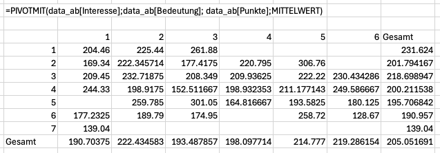
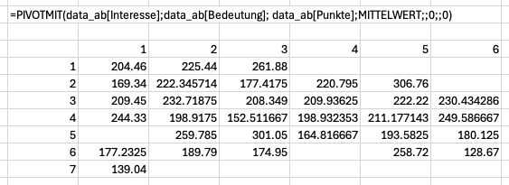

15 Daten formen
Dieses Kapitel wird aktuell überarbeitet und erweitert. Fehlerhinweise und Korrekturen sind willkommen.
Speziell für die Datenvisualisierung, erfordert Excel das Umformen von Daten. Dabei kann es notwendig werden, die Daten von der Normalform in eine Breitform umzuformen. Auch für andere Operationen kann es sinnvoll sein, Daten eine definierte Form zu geben. Zu diesen Operationen gehören z.B. gruppierte Aggregationen.
15.1 Die PIVOTMIT()-Funktion
Seit 2024 enthält Excel die Funktion PIVOTMIT(). Diese Funktion erlaubt das Überführen von Daten in eine Kreuztabelle. Diese Funktion hat vier verpflichtende Parameter:
row_fields(Zeilenwerte)col_fields(Spaltenwerte)values(Aggregationswerte)function(Aggregationsfunktion)
Diese Funktion ähnelt der den klassischen Pivot-Tabellen stark: Die beiden ersten Parameter liefern Gruppierungswerte, über die eine Zusammenfassung erstellt werden soll. Mit dem Parameter values werden die Werte festgelegt, die zusammengefasst werden sollen. Der vierte Parameter legt die Aggregationsfunktion fest, dabei kann jede Aggregrationsfunktion verwendet werden.

PIVOTMIT()-Funktion mit MITTELWERT() als AggregatorDie Standardausgabe generiert Zeilen- und Spaltensummen. Diese Summen sind für eine Breitform unhantlich und lassen sich durch die optionalen 6. und 8. Parameter unterdrücken, wenn diese Parameter auf den Wert 0 gesetzt werden. Die Zeilensummen werden durch den 6. Parameter und die Spaltensummen werden durch den 8. Parameter beeinflusst.

PIVOTMIT()-Funktion ohne Zeilen- und Spaltensummen15.1.1 PIVOTMIT() und fehlende Werte
Tritt ein Zeilen-und-Spaltenwertepaar nicht auf, kann PIVOTMIT() keine Werte aggregieren. Anders als andere Excel-Funktionen werden solche fehlenden Werte nicht durch den Wert 0 ersetzt, sondern durch eine leere Zeichenkette. Dieses Verhalten lässt sich nicht anpassen, sondern muss durch eine zusätzliche Operation korrigiert werden.
= LET(breitform; PIVOTMIT(
data_ab[Interesse];
data_ab[Bedeutung];
data_ab[Punkte];
MITTELWERT;;
0;;
0);
WENN(breitform = ""; 0; breitform)
)Der Wert 0 darf nicht eingesetzt werden, wenn eine Breitform erzeugt werden soll, weil sonst Werte erzeugt werden, die ursprünglich nicht vorhanden waren.
15.1.2 Eine Breitform mit PIVOTMIT() erzeugen.
Wird als Aggregatorfunktion die Funktion SUMME() verwendet und jedes Wertepaar, dass sich aus den ersten beiden Parametern ergibt, dann ist diese Aggregation mit der Identifitätsfunktion funktional gleich.
= PIVOTMIT(Zeilenindex; Spaltenindex; Werte; SUMME;; 0;; 0)Die Funktion PIVOTMIT() erfordert eine Aggregationsfunktion. Diese Funktion stellt sicher, dass mehrfach vorkommende Wertepaare zu einem eindeutigen Ergebnis führen. Dieses Verhalten führt dazu, dass die PIVOTMIT()-Funktion nicht immer umkehrbar ist, sobald die vorkommenden Wertepaare nicht eindeutig sind.
Eine Langform kann nur in eine Breitform umgeformt werden, wenn alle Wertepaare der Indexvektoren eindeutig sind. Eine solche Langform liegt dann in ihrer Normalform für die beiden Indexvektoren vor.
15.1.3 Breitform ohne Überschriften erhalten
Weil die Funktion PIVOTMIT() auch Zeilen- und Spaltenüberschriften erzeugt, lassen sich die einzelnen Vektoren nicht direkt mit SPALTENWAHL() extrahieren. Leider lassen sich die Spaltenüberschriften nicht unterbinden.
Damit die Überschriften nicht in den Daten vorliegen, müssen diese nach der Transformation entfernt werden:
= LET(breitform; PIVOTMIT(
Zeilenindex;
Spaltenindex;
Werte;
SUMME;;
0;;
0);
zeilenwerte; ZEILEN(breitform) - 1;
spaltenwerte; SPALTEN(breitform);
wertezeilen; SEQUENZ(zeilenwerte; 1; 2);
wertespalten; SEQUENZ(1;spaltenwerte; 1);
INDEX(breitform; wertezeilen; wertespalten)
)Um auch die Werte des Zeilenindex zu entfernen, muss die Spaltenanzahl ebenfalls verringert werden.
= LET(breitform; PIVOTMIT(
Zeilenindex;
Spaltenindex;
Werte;
SUMME;;
0;;
0);
zeilenwerte; ZEILEN(breitform) - 1;
spaltenwerte; SPALTEN(breitform) - 1;
wertezeilen; SEQUENZ(zeilenwerte; 1; 2);
wertespalten; SEQUENZ(1; spaltenwerte; 2);
INDEX(breitform; wertezeilen; wertespalten)
)Intuitiv bietet sich die Funktion BEREICH.VERSCHIEBEN() ebenfalls an. Diese Funktion erfordert jedoch eine Zellbezug, so dass diese Funktion nicht in Operationen mit LET() und LAMBDA() eingesetzt werden kann.
15.2 Vektoren auf ihre Normalform prüfen
Zwei Indexvektoren liegen genau dann in ihrer Normalform vor, wenn alle Wertepaare (bzw. Tupel) eindeutig sind, d.h. genau einmal vorkommen. Damit eine Breitform der Daten für diese Indexvektoren erzeugt werden kann, muss gelegentlich geprüft werden, ob diese auch tatsächlich in ihrer Normalform vorliegen.
Gegeben seien die folgenden Daten im Bereich A1:C6:
| Index 1 | Index 2 | Werte |
|---|---|---|
| a | e | 1 |
| b | f | 2 |
| c | g | 3 |
| d | e | 4 |
| a | e | 5 |
Die Indexvektoren liegen in Index 1 und Index 2, also in A2:A6 bzw. B2:B6.
Dazu werden alle eindeutigen Wertepaare mit EINDEUTIG() erzeugt. In diesem Beispiel wird diese Operation in Zelle D2 durchgeführt.
= EINDEUTIG(A2:B6)Der Bereich D2# enthält jetzt alle eindeutigen Wertepaare der Indexvektoren.
Die Normalform ist also dann gegeben, wenn jedes eindeutige Wertepaar höchstens einmal auftritt. Das liesse sich mit der folgenden Formel überprüfen, die als Ergebnis WAHR hat, wenn die Indexvektoren in ihrer Normalform vorliegen.
= 1 = MAX(NACHZEILE(
D2#;
LAMBDA(zeile;
ZEILEN(
FILTER(
A2:A6;
(SPALTENWAHL(zeile;1)=A2:A6) *
(SPALTENWAHL(zeile;2)=B2:B6)
)
)
)
))Diese Prüfung ist recht komplex und lässt sich stark vereinfachen, wenn die Voraussetzungen für die Normalform berücksichtigt werden. Dazu wird die Eigenschaft der Normalform ausgenutzt: Weil eine Normalform erfordert, dass die Wertepaare der Indexvektoren höchstens einmal vorkommen dürfen, muss das Ergebnis der Funktion EINDEUTIG() die gleiche Länge haben, wie die ursprünglichen Vektoren. Weil beide Indexvektoren aus der Definition des Datenrahmens die gleiche Länge haben müssen, lässt sich die Normalform mit der folgenden Operation prüfen.
= ZEILEN(A2:A6) = ZEILEN(D2#)Diese Prüfung lässt sich in eine Operation zusammenfassen.
= ZEILEN(A2:A6) = ZEILEN(EINDEUTIG(A2:B6))Ergibt diese Operation WAHR, dann kann die Breitform ohne Informationsverlust erzeugt werden.
15.3 Die INDEX()-Funktion
Die Funktion PIVOTMIT() hat keine unmittelbare Umkehrfunktion. Mithilfe der INDEX()-Funktion lässt sich eine Umkehrfunktion konstruieren. Diese Funktion wurde bereits im letzten Abschnitt zum entfernen der Werte der Indexvektoren eingesetzt.
Die INDEX()-Funktion ist eine sog. Referenzfunktion, mit der auf Werte mittels ihrer Position in einem Vektor oder einer Matrix zugegriffen werden kann. Die INDEX()-Funktion erwartet drei Parameter:
- Die zu referenzierende Matrix
- einen gültigen Zeilenindex, und
- einen gültigen Spaltenindex.
Der Zeilen- und Spaltenindex sind Ganzzahlen, die sich auf die Position der Werte beziehen. Auf diese Weise lassen sich Werte aus einem Vektor oder einer Matrix extrahieren. Die beiden Indexwerte beziehen sich dabei relativ zur linken oberen Zelle des übergebenen Bereichs, wobei die Referenzzelle einen Zeilen- und Spaltenindex von 1 hat. Aus dieser Spezifikation ergibt sich, dass die INDEX()-Funktion keine negativen Indexwerte akzeptiert.
15.3.1 INDEX() mit Vektoren als Indexparameter
Die INDEX()-Funktion erlaubt Vektoren für den Zeilen- und Spaltenindex. Auf diese Weise lassen sich mehrere Werte auf einmal referenzieren. Liegen die Vektoren in gleicher Orientierung vor, dann bildet die Funktion Indexpaare. Die Operation = INDEX(A1:C5; {1; 2; 4}, {1; 2; 2}) wählt beispielsweise die Werte der Adressen A1, B2 und B4 aus.
Liegen die Indizes in verschiedenen Orientierungen vor, dann bildet die INDEX()-Funktion eine Indexmatrix mit allen Permutationen der angegebenen Indizes. Die Werte werden dann als Matrix angeordnet. Z.B. die Operation =INDEX(A1:D4; {1;2;4}; ZUZEILE({1;2;2})) wählt die Werte an A1, A2, A4, B1, B2, B4 sowie nocheinmal B1, B2 und B4 aus. Diese Dopplung entsteht durch die doppelte Angabe des Werts 2 im Spaltenindex. Auf den ersten Blick erscheint dieses Verhalten unpraktisch, im folgenden Abschnitt wird genau diese Eigenschaft ausgenutzt.
Die Funktion INDEX() behält die Orientierung der Parametervektoren bei. Diese Eigenschaft lässt sich ausnutzen, um eine Verkettung mit MTRANS() zu vermeiden. Die Operation =MTRANS(INDEX(A1:D4; {1;2;4}; ZUZEILE({1;2;2}))) ist mit der Operation =INDEX(A1:D4; ZUZEILE({1;2;4}); {1;2;2}) funktional gleich.
15.3.2 Die Umkehrung von PIVOTMIT() konstruieren
Beim Umformen von der Breitform in die Langform müssen nicht nur die Werte als Vektor dargestellt werden, sondern auch die beiden Indexvektoren wiederhergestellt werden. Entsprechend reicht der naive Aufruf von ZUSPALTE() nicht.
Analog zur Eingabe von PIVOTMIT() soll die Umkehrung drei Vektoren als Ergebnis erzeugen. Damit die Operation eine Umkehrung von PIVOTMIT() ist, ist der Ausgangswert der Umkehrung eine Matrix mit Zeilen- und Spaltenüberschriften.
Im folgenden wird der Bezeichner datenbereich in Excel-Formeln verwendet, dieser muss gegen die konkrete Adresse der in Breitform vorliegenden Daten ersetzt werden. Das Gleiche gilt für andere Bezeichner, die sich auf vorangegangene Berechnungen beziehen.
Für die Umkehrung wird ausgenutzt, dass die Langform die höchstens soviele Datensätze wie Werte in der Ausgangsstruktur haben kann. Es gilt also n_z \cdot n_s. Weil die Datenstruktur beschriftet ist, müssen die Zeilen- und Spaltenumfänge der Datenstruktur um 1 reduziert werden. Daraus ergibt die folgenden Excel-Operation für den Umfang der Ergebnisdatenstruktur.
= (ZEILEN(datenbereich) - 1) * (SPALTEN(datenbereich) - 1)Als nächstes werden drei Indexvektoren als Spaltenvektoren erzeugt:
- Der Indexvektor für die Zielposition im Ergebnis.
- Der Indexvektor für die jeweilige Zeile
- Der Indexvektor für die jeweilige Spalte
Der Indexvektor für die Zielposition ergibt sich direkt aus dem gerade bestimmten Umfang. Diesen Vektor bezeichnen wir hier als Zielindex.
= SEQUENZ(zielumfang)oder explizit
= SEQUENZ((ZEILEN(datenbereich) - 1) * (SPALTEN(datenbereich) - 1))Dieser Indexvektor enthält alle Positionen der Werte im Zielvektor. Aus diesem Vektor lassen sich die beiden Indexvektoren bestimmen.
// Zeilenindex
= GANZZAHL((zielindex - 1)/(SPALTEN(datenbereich) - 1)) + 2
// Spaltenindex
= REST(zielindex - 1; SPALTEN(datenbereich) - 1) + 2In beiden Termen ist die Addition mit 2 notwending, weil zuerst der Indexbeginn bei 1 korrigiert (+ 1) und anschliessend die Überschriftsspalte bzw. -Zeile im Index berücksichtigt (+ 1) werden muss. Diese beiden Korrekturen korrespondieren mit den - 1 in gleichen Term.
Liegt eine Tabelle in einer Breitform ohne Beschriftungen vor, dann müssen die Indizes ohne Korrekturen berechnet werden:
// Zielindex
= SEQUENZ(ZEILEN(datenbereich) * SPALTEN(datenbereich))
// Zeilenindex
= GANZZAHL((zielindex - 1)/(SPALTEN(datenbereich))) + 1
// Spaltenindex
= REST(zielindex - 1; SPALTEN(datenbereich)) + 1Mit dem Zeilen- und dem Spaltenindex lassen sich nun die drei Ausgangsvektoren aus dem Datenbereich rekonstruieren:
// Zeilenwerte
= INDEX(datenbereich; zeilenindex; 1)
// Spaltenwerte
= INDEX(datenbereich; 1; spaltenindex)
// Werte
= INDEX(datenbereich; zeilenindex; spaltenindex)Weil PIVOTMIT() auch Werte für nicht vorhandene Indexpaare erzeugt, müssen diese Indexpaare abschliessend aus dem Ergebnis entfernt werden:
// Für die Zeilenwerte
= FILTER(zeilenwerte; werte <> "")
// Für die Spaltenwerte
= FILTER(Spaltenwerte; werte <> "")
// Für die Werte
= FILTER(werte; werte <> "")Falls die drei Vektoren unmittelbar nebeneinander stehen, können die Operationen auch zusammengefasst werden:
= FILTER(zeilenwerte:werte; werte <> "")Diese Operationen lassen sich in der folgenden Excel-Formel zusammenfassen:
= LET(
zeilenumfang; ZEILEN(datenbereich) - 1;
spaltenumfang; SPALTEN(datenbereich) - 1;
zielumfang; zeilenumfang * spaltenumfang;
zielindex; SEQUENZ(zielumfang) - 1;
zeilenindex; GANZZAHL(zielindex / spaltenumfang) + 2;
spaltenindex; REST(zielindex; spaltenumfang) + 2;
werte; INDEX(datenbereich; zeilenindex; spaltenindex);
zwischenergebnis; HSTAPELN(
INDEX(datenbereich; zeilenindex; 1);
INDEX(datenbereich; 1; spaltenindex);
werte
);
FILTER(zwischenergebnis; werte <> "")
)Die Funktion HSTAPELN() wird in dieser Formel dazu verwendet, eine zusammenhängende Datenstruktur für die abschliessende FILTER()-Operation zu erzeugen.
15.4 SPALTENWAHL() und ZEILENWAHL()
Die beiden Funktionen SPALTENWAHL() und ZEILENWAHL(), sind Vereinfachungen der INDEX()-Funktion.
Die Funktion SPALTENWAHL() wählt ganze Spalten aus. Beispielsweise wählt der Aufruf von SPALTENWAHL(A1:D17; 2) die zweite Spalte des Bereichs A1:D17 aus. Man erhält dann die Werte im Bereich B1:B17. Diese Funktion entspricht der folgenden Operation mit INDEX().
= INDEX(
A1:D17;
SEQUENZ(ZEILEN(A1:D17));
2
)Analog verhält sich die Funktion ZEILENWAHL(). Sie wählt die angegebene Zeile aus einem Bereich aus. Für den Bereich A1:D17 wählt der Aufruf ZEILENWAHL(A1:D17; 7) die Werte im Bereich A7:D7 aus. Dieser Aufruf entspricht der folgenden Opeation mit INDEX().
= INDEX(
A1:D17;
7;
SEQUENZ(1; SPALTEN(A1:D17))
)Ähnlich wie die INDEX()-Funktion unterstützen beide Funktionen die Auswahl mehrerer Spalten bzw. Zeilen. Dazu muss entsprechend ein Vektor mit den gewünschten Zeilen- bzw. Spaltennummern übergeben werden.
Die Funktionen SPALTENWAHL() und ZEILENWAHL() sind der Funktion INDEX() vorzuziehen, wenn nur Spalten oder Zeilen in einer Operation extrahiert werden müssen. Operationen, die SPALTENWAHL() und ZEILENWAHL() verketten, sollten jedoch vermieden werden. In solchen Fällen ist die Funktion INDEX() meist besser geeignet, weil dann die Funktionsverkettung entfällt.